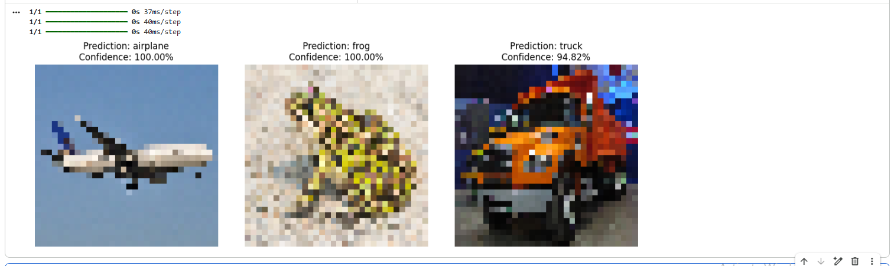

Finals - Lab Exercise 4 (CIFAR-10 Custom Image Prediction)
Description: The final application phase of the CIFAR-10 deep learning pipeline, where the optimized Convolutional Neural Network (CNN) is utilized to classify three external, real-world images.
Objectives/Purpose:
- To import and process external image files that were not part of the original CIFAR-10 dataset.
- To build a preprocessing script that resizes and normalizes custom images to match the model's strict input constraints (32x32x3).
- To execute the prediction function and extract both the predicted class label and its statistical confidence score.
- To visualize the final predictions alongside the original images using Matplotlib.
Key Features
- Custom Inference Pipeline: Developed a looping script capable of taking an array of local image paths, processing them sequentially, and displaying the results dynamically.
- Rigorous Preprocessing: Ensured data integrity by utilizing Keras's
image.load_imgto force a 32x32 resolution and manually dividing pixel arrays by 255.0 to match the training data's normalization. - Confidence Scoring: Extracted the raw Softmax probability distributions, mapping the highest probability index to the corresponding class name (e.g., 'airplane', 'dog') and converting the floating-point value into a readable percentage.
Important Code Blocks
1. Image Loading and Dimension Matching
Neural networks require exact input shapes. This block loads an arbitrary external image, forces it into a 32x32 dimension, converts it into a mathematical array, and normalizes the pixel data.
from tensorflow.keras.preprocessing import image
import numpy as np
# Load the image and resize it to match CIFAR-10 dimensions
img = image.load_img(img_path, target_size=(32, 32))
img_array = image.img_to_array(img)
# Normalize the image
img_array = img_array / 255.02. Batch Expansion and Prediction
Keras models expect inputs in batches, even when predicting a single image. The np.expand_dims function wraps the 3D image array into a 4D tensor (1, 32, 32, 3) before passing it to the model.
# Expand dimensions to create a "batch" of 1 image
img_batch = np.expand_dims(img_array, axis=0)
# Make the prediction
predictions = model.predict(img_batch)3. Parsing the Output Vector
The model returns an array of 10 probabilities. np.argmax finds the index of the highest probability, which is then mapped against the class names array.
# Get the index of the highest probability and map to class name
predicted_class_index = np.argmax(predictions[0])
predicted_class_name = class_names[predicted_class_index]
# Calculate confidence percentage
confidence = np.max(predictions[0]) * 100Screenshots & Results

Observations:
- The model successfully generalized its learned features to external data, correctly identifying the 3 custom images despite variations in lighting, background, and original resolution.
- Resizing high-resolution images down to 32x32 causes significant pixelation, yet the CNN's spatial filters were robust enough to detect the core identifying patterns of the objects.
Tools & Technologies
- Languages: Python 3
- Libraries/Frameworks: TensorFlow/Keras (preprocessing.image module), NumPy (array manipulation), Matplotlib (subplot visualization)
- Platforms: Google Colab
Challenges & Solutions
Problems Encountered: A common error when passing a single 32x32 RGB image array to a CNN is a shape mismatch exception. The model is mathematically designed to expect a 4-dimensional tensor (batch_size, height, width, channels), but a single image is only 3-dimensional (height, width, channels).
How I Solved Them: I utilized NumPy's expand_dims(..., axis=0) function to wrap the image array inside another array. This artificially creates a "batch" containing exactly one image, satisfying the Keras API requirement without altering the underlying image data.
Learning Reflection
What I Learned: I learned how to bridge the gap between model training and actual inference. It reinforced the concept that any data fed into a trained model must undergo the exact same preprocessing and scaling steps as the original training dataset.
Skills Gained: Python image processing with Keras utilities, multi-dimensional array manipulation using NumPy, and extracting readable data from raw Softmax probability outputs.